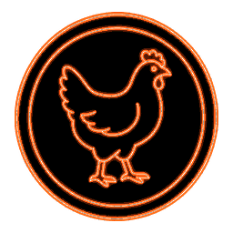
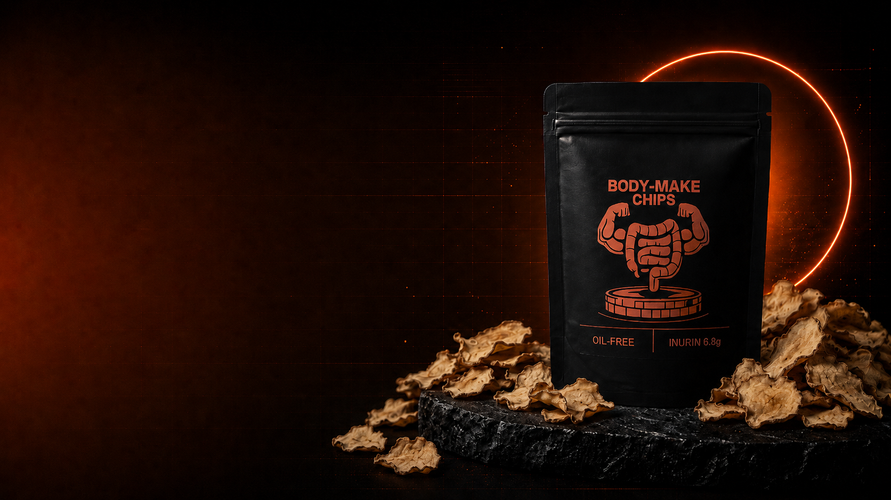
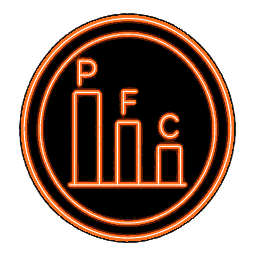
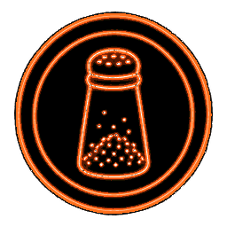
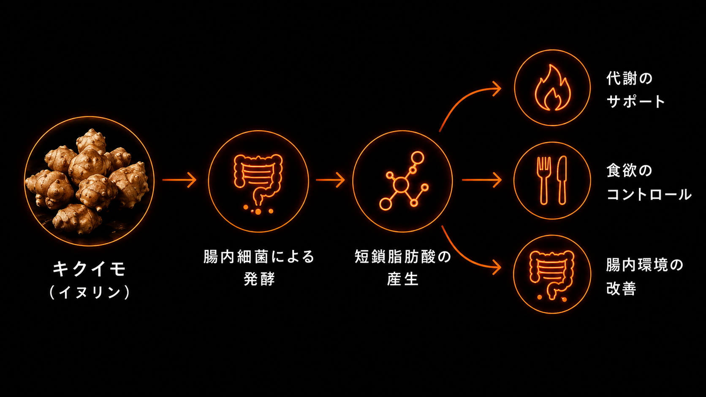
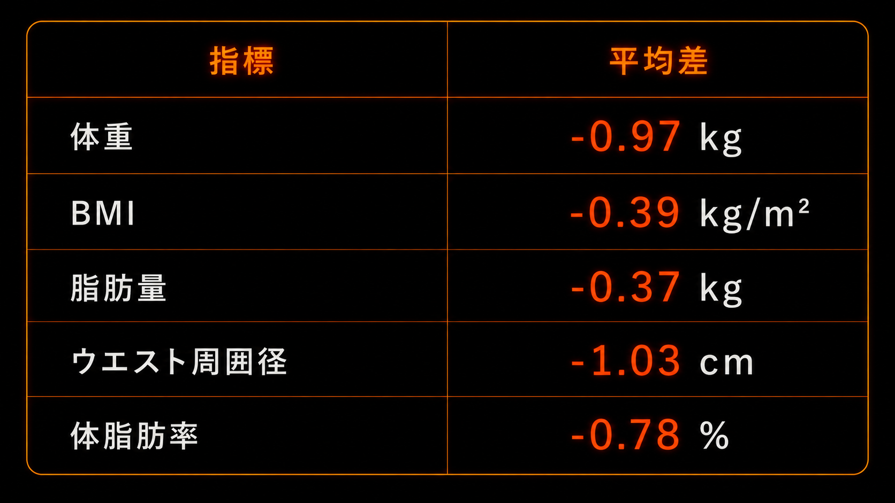

鶏むね肉やプロテインに頼る単調な食事
BODY MAKE CHIPS
ボディメイクチップス
本気の減量中でも、食事設計に組み込みたいスナック
イヌリンに着目した「戦略的間食」という選択肢

減量中でも取り入れやすい、低カロリー・高食物繊維のボディメイクスナック。
| 熱量 | 38kcal |
|---|---|
| たんぱく質 | 1.4g |
| 脂質 | 1.2g |
| 炭水化物 | 10.3g |
| └ 糖質 | 0.8g |
| └ 食物繊維 | 9.5g |
| うち総フラクタン/イヌリン相当 | 6.8g |
| 食塩相当量 | 0.15g |
| カリウム | 420mg |

鶏むね肉やプロテインに頼る単調な食事

PFCバランスだけの食事管理
間食＝悪とし、
空腹を我慢

塩分に頼りがちな減量食
INGREDIENT & RESEARCH

PREBIOTIC FIBER
イヌリンは、キクイモなどに含まれる水溶性かつ発酵性の食物繊維です。
消化されにくく大腸まで届き、腸内細菌のエサとして利用されます。その発酵過程で、酢酸・プロピオン酸・酪酸などの短鎖脂肪酸がつくられます。
腸内細菌のエサとなり、ビフィズス菌などの増加が報告されています。
短鎖脂肪酸と、GLP-1やPYYなどの満腹感・食欲に関わるホルモンとの関係が研究されています。
空腹時血糖やHbA1cなど、糖代謝に関わる指標への影響が研究されています。
中性脂肪やLDLコレステロールなど、脂質代謝に関わる指標への影響が研究されています。
BODY MANAGEMENT
複数のランダム化比較試験を統合したメタ解析では、イヌリン型フルクタンの摂取により、体重・BMI・脂肪量・ウエスト周囲径の有意な低下が報告されました。
下の図は、各指標について報告された平均差を示したものです。

PRODUCT DESIGN
SATISFACTION
減量中には避けられがちなスナックを、サプリメントのように目的を持って選べる。そんな世界を目指しました。
発酵性食物繊維であるイヌリンとカリウムを、小腹が空いたときにスナックとして取り入れられます。
ただおいしく、食べ応えがあるだけではなく、本気で絞る人が食べる理由を持てる一袋を目指しました。
CRAFTED PROCESS
キクイモの加工・開発に20年の実績を持つ会社の協力のもと、2年間の試作を重ね、完成しました。
TRIAL PACK
まず試す
無理なく始める新習慣
無理なく続けるライト定期便
お得なまとめ買い
BODY-MAKEの最適解
そんな想いから生まれたBODY-MAKE CHIPSは、一般的な置き換えダイエット食品ではありません。 ボディビルダー級の本気の減量中でも、組み込みたくなるスナックを目指しました。 本気のボディメイク中の人に我慢だけではない食事設計を届けたい。 BODY-MAKE CHIPSは、そのための新しい選択肢です。
毎日の食習慣として取り入れていただくのが理想ですが、食べる頻度に決まりはありません。
まずは3日に1回や半袋程度から、体調に合わせて無理のない頻度でお試しください。
発酵性食物繊維に慣れていない方は、一度に多く食べるとお腹が張る・ゆるくなる場合があります。
食べる時間帯に決まりはありませんが、おすすめは昼食から夕食までの間です。
仕事中やトレーニング前後など、小腹が空いたときの間食として取り入れていただけます。
はい。1袋15gは食べきりサイズとして設計しています。
そのまま1袋を目安にお召し上がりいただけます。
発酵性食物繊維に慣れていない方は、一度に多く食べるとお腹が張る・ゆるくなる場合があります。
最初は半袋程度から始めるのがおすすめです。
慣れてきた方は、1日2袋など、食生活に合わせて量を調整していただけます。
製造条件上、最長で約1年を想定しています。
ただし、発送時期や製造ロットにより、実際にお届けする商品の賞味期限は異なります。
お届け時点で最低でも4か月以上の賞味期限がある商品を発送します。
はい。定期便はいつでも解約できます。
回数縛りはありません。
次回決済日前までに、マイページまたはお問い合わせからお手続きください。
解約方法の詳細は、ご注文後の案内メールまたは商品ページ内でご確認いただけます。
はい。2週間ごと、4週間ごと、6週間ごとなど、生活スタイルに合わせてお選びいただけます。
毎日続けたい方、まずは無理なく始めたい方など、食べる頻度に合わせて、無理なく続けられる周期をお選びください。